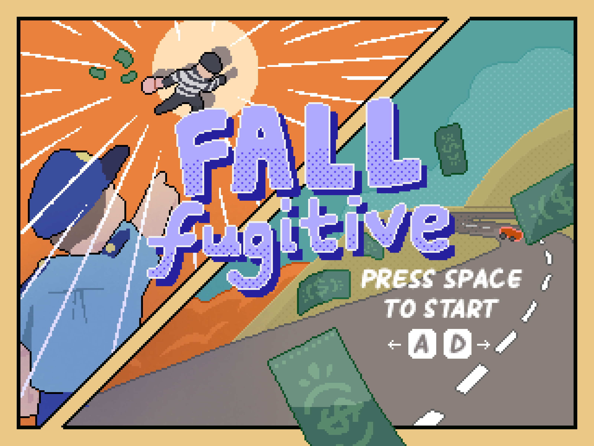
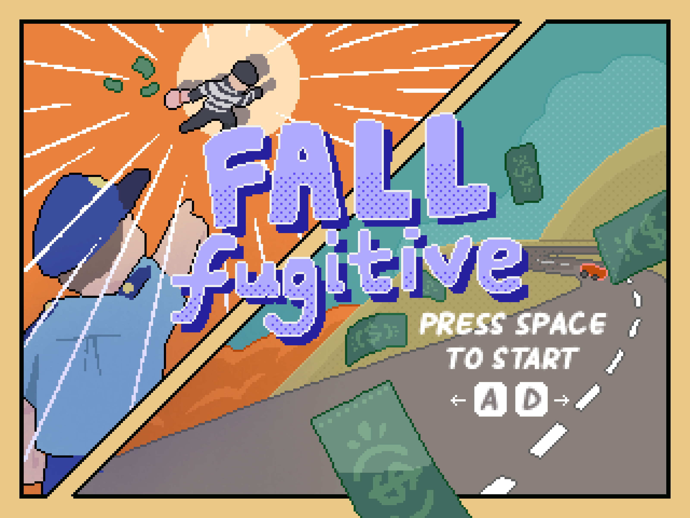

Fall Fugitive
SUMMARY
An FPGA game written in C where the player is controlling a police car that must dodge other cars and pick up bags of stolen money while chasing a robber's getaway car.
TOPICS
DESCRIPTION
Fall Fugitive is a top-down car-chasing game where the player is inside a police
car in a high-speed chase after some bank robbers. The police car is moving through all 4 lanes and
must dodge the other cars while chasing after the getaway vehicle. Along the way, they must collect bags of stolen
money that were dropped along the way. There is no time limit or destination - the player wins if they
are able to collect 10 bags of money without crashing into any cars (which would result in an immediate loss). There
is no penalty for missing a bag of money.
In this partner project, we collaborated on the game logic, but worked separately on the other components
and used GitHub to share our files. My main responsibility was outputting all the components to the VGA.
Using C, it was fairly simple to write different functions to "print" different sprites to the screen, and
randomize positions and colours using function arguments. What I struggled with was implementing hardware-enabled
double buffering, to ensure our game looked smooth and had no tearing. In my initial implementation, some components
disappearing when the processor switched the alternating buffer frames.
It took a lot of debugging and rewriting to finally get it right, but in the process I gained a much deeper
understanding of how the processor really worked.